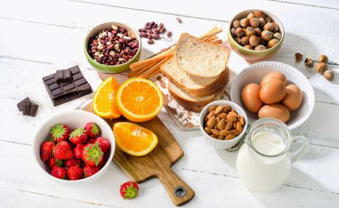
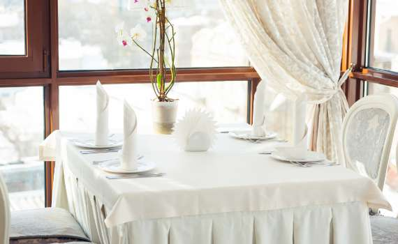
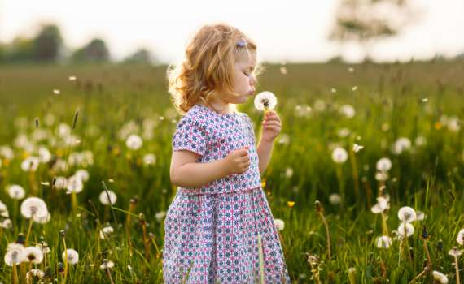

CUISINE
料理
料理も、雰囲気も分かち合う想い出にのこるディナータイム
当館の位置する九州中央、温暖な阿蘇くじゅう国立公園や熊本県は全国屈指の食材の宝庫。
手に入る食材はどれも一級品、そのよさを最大限引き出す「手間ひま」という魔法。
「南阿蘇・熊本の食材にこだわる」という原点に立ち返り、出来上がった南阿蘇の創作フレンチのフルコース。
みずみずしい野菜や阿蘇あか牛を中心に、熊本の大地の恵みをお楽しみ下さい。
DINNER COURSE-ディナーコース-
-お肉料理-
南阿蘇特産 阿蘇あか牛のフィレステーキ
季節野菜の素揚げを添えて
-前菜-
南阿蘇産イワナのマリネ 三日月盛り
夜空のドレッシングを添えて
-スープ-
熊本産シルクスイートのポタージュ
-パン-
焼きたてのまんまるフォカッチャ
-揚げ物-
春キャベツの星空に浮かぶクロケット
火の本豚のポークビーンズとともに
-デザート-
季節のデザート
-ドリンク-
コーヒー/紅茶/ハーブティーをお好みで
※季節・仕入れによりメニューは変化します。
MORNING PLATE-モーニングプレート-
-プレート1-
パンケーキ
-プレート2-
サラダ
-プレート3-
ウィンナー&スペイン風オムレツ
-プレート4-
フルーツ&ジャージーヨーグルト
-スープ-
コーンスープ
-自家製手作りパン-
クルミパン・ミルクパン
-ドリンク-
コーヒー / 紅茶 / 緑茶 / 牛乳 / ジュース
※季節・仕入れによりメニューは変化します。
KIDS MENU-お子さま・赤ちゃんのお料理-
お子さま宿泊通常のお料理「ハンバーグコース」
お子さま料金でご宿泊の場合、ご夕食はハンバーグコースになります。
（※メインがハンバーグになります）
小さなお子さま限定「パン・スープセット」
1歳からの小さいお子様へ、パン、スープのみのセット。(1食1,000円)
※ご提供は平日のみとなります。ご了承ください。
阿蘇の野菜を使ったやさしい離乳食
離乳食(1食1,000円)は、12ケ月未満のお子さま限定です。
※ご提供は平日のみとなります。ご了承ください。
F&Q
-

Q 食物アレルギーは対応できますか？
事前にお申し付けいただければご対応可能です。ご予約時に、お気軽にご相談ください。
※コース料理すべてを野菜のみのベジタリアンに統一することはいたしかねます、ご了承下さい。 -

Q レストランで煙草は吸えますか？
客室・レストラン・共有スペースは禁煙となっております。１階ロビーに喫煙コーナーがありますので、そちらをご利用ください。
-

Q 子どもの料理の内容はなんですか？
お子さま料金でのご宿泊のお客様はハンバーグコースです。小さなお子さまには、パン・スープセットもご用意しております。詳しくは、お子さま料理のご案内をご覧ください。